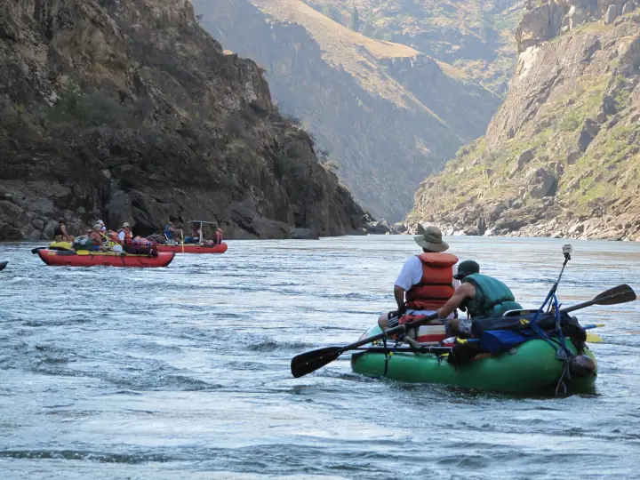
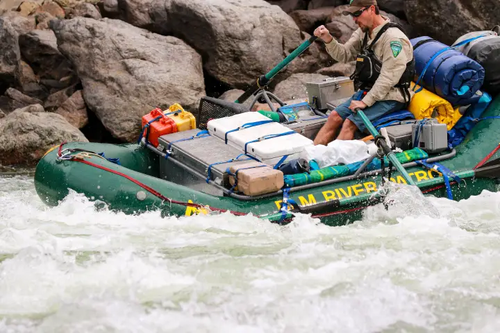
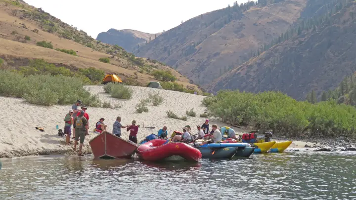

Lower Salmon Gorge
Hammer Creek to Heller Bar · 72 river miles- Put-in
- Hammer Creek, near White Bird (Pine Bar for a shorter trip)
- Take-out
- Heller Bar on the Snake, below Asotin, WA
- Length
- 72 miles · 4–5 days
- Difficulty
- Class II–III+; Slide Rapid is Class V above ~20,000 cfs
- Season
- July–September, after the peak drops
- Permit
- Self-issue BLM permit, no lottery
- Camps
- First-come sand beaches
- Gauge
- USGS 13317000 at White Bird · text
lower salmon
lower salmon to
866-284-5181 from your inReach and this reading
comes back over satellite. No app, no account, no cell service.


The river
The Lower Salmon is the multiday you can actually get on. No lottery, a self-issue permit, a put-in an hour from a highway, and four days of warm water, big sand, and Class III through four distinct canyons: Green Canyon, Cougar Canyon, Snowhole Canyon, and Blue Canyon, each a gorge of dark basalt and granite with a pool-and-drop rapid or two at the heart of it, separated by open, grassy benches where the canyon breathes out. Then the Salmon ends, quietly, into the Snake, and you row twenty miles of big flat water past the mouth of Hells Canyon to Heller Bar.
By the time the river gets here it is the whole Salmon: the Middle Fork, the South Fork, the Little Salmon, everything. It is a big-volume river in a desert canyon, hot in August, with rattlesnakes on the benches and poison ivy at the mouths of the side creeks. The rapids people remember are Demons Drop and Snowhole (the biggest, a solid Class III+ to IV at most summer flows) and China. Slide Rapid, low in Blue Canyon, is a different animal: at moderate flows it is a wave train, and somewhere above about 20,000 cfs it becomes a genuine Class V that the BLM tells you not to run.
The beaches are the point. The Lower Salmon has some of the biggest sand camps in the West, and in late summer they are enormous, warm, and mostly empty on a weekday.
The one gauge that actually sits at your put-in
White Bird (USGS 13317000) shares its number with the Main Salmon page, but the two runs relate to it completely differently. For the Main it is a distant downstream indicator. For the Lower it is essentially the put-in reading: Hammer Creek is right there, so what the gauge says is what you are about to launch onto. That is unusual and worth using.
Everything above has already joined in by this point, so the number moves slowly and predictably through the summer: a steady fall off the June peak, then a long, flat August and September. A rain event in the mountains shows up here a day or two later, and smaller than it was up high.
Reading the number
Most trips here happen in the back half of summer, when the river has dropped off its snowmelt peak and the big sand beaches come out. Around 3,000–20,000 cfs covers the usual planning range. Lower water means better beaches and a friendlier gorge; high water makes the gorges continuous and pushy, with big wave trains and fewer places to stop. The 20,000 cfs line matters for Slide Rapid specifically: above it, plan on lining, portaging, or not going. Wind coming up the canyon in the afternoon is its own tax, at any flow, and the Snake miles at the end are where it hurts most.

The gauge is information, not permission. It cannot see wood, weather, or what your group can handle. Scout, and make the call on the water.
Getting there and the shuttle
To the put-in
Hammer Creek is just off US 95 near White Bird, about an hour south of Grangeville and half an hour north of Riggins. It is a BLM recreation site with a dozen first-come campsites, drinking water, restrooms, and the launch ramp, and a good place to sleep the night before. Grangeville is the last real grocery run; White Bird has a store, a bar, and All Rivers Shuttle. For a shorter trip, Pine Bar is another BLM site a few miles downstream on the Salmon River Road, with a ramp and numbered campsites.
The take-out
Heller Bar is on the Washington side of the Snake, up the river road about half an hour south of Asotin and the Lewiston–Clarkston bridges. It is a Washington state site, so a Discover Pass has to be on the vehicle. The ramp is shared with Hells Canyon jet boats; land early or late on a summer weekend.
The shuttle
Hammer Creek to Heller Bar is about three hours of driving each way, by way of Grangeville, Lewiston, and Asotin, so the round trip eats a day. Almost everyone hires it out. The drivers below run it all summer and can usually sort the Discover Pass for you.
- All Rivers Shuttle
- Based in White Bird, at the put-in end. Clear booking instructions, Discover Pass on request, last-minute gear.
- Central Idaho River Shuttles
- Hammer Creek to Heller Bar; also the Main, Middle Fork, and Selway.
- Salmon River Drifters
- Riggins-based; Hammer Creek or Pine Bar to Heller Bar.
Permits and season
No lottery here. The Lower Salmon runs on a self-issue BLM permit that is required for every trip below Hammer Creek. You fill it out at the White Bird gravel pit, Hammer Creek, Pine Bar, or Rock Creek boxes, at the BLM office in Cottonwood, or online through the Idaho BLM site before you leave home. The standard rules apply: fire pan, groover, group size limits, and pack out everything. That accessibility is a large part of why this is the most common first big trip on the Salmon system.
The season is a function of the number, not of a permit calendar. June is high, cold, and fast, and Slide is closed to reason; July is the transition; August and September are the classic months, hot and low with the beaches out. Confirm current requirements with the BLM Cottonwood Field Office. This page tracks water, not paperwork.
Camps
No assignments and no reservations. Camps on the Lower Salmon are first-come, and they are sand beaches, so their size changes with the flow: a beach that sleeps forty at 6,000 cfs can be a sliver at 15,000. The BLM boater's guide maps the camps by mile, and the usual rhythm is a camp in or just below each canyon: one night in Green or Cougar, one around Snowhole, one in Blue Canyon or at the confluence, then the run out on the Snake. Summer weekends put pressure on the obvious beaches near the put-in; launch on a weekday or push a few miles farther the first night and you will have your pick.

How the text line works out there
Cell service is gone within a mile of Hammer Creek and does not come back until Asotin. Save 866-284-5181 as a contact on your inReach (or your phone, if it does satellite texting) before you leave White Bird, and text the run name. One reply comes back over the satellite, the same way a message from home would:
That is the whole product. It costs nothing beyond whatever your device charges for a message, there is no account, and you get exactly one reply per text. On this run the number is most useful the evening before Slide: if it is climbing toward 20,000 after a storm up high, you want to know before you are in Blue Canyon. Details and the failure modes are on the how it works page.
Before you launch
Save the number to your phone and to your inReach before you drop into the canyon, and send yourself a test message from Grangeville. Compare the Main and Middle Fork upstream, or browse every run LateBoof knows.